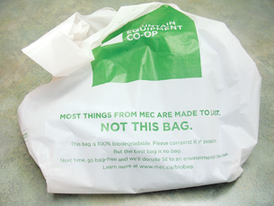

Module 6—Petrochemicals
 Reflect on the Big Picture
Reflect on the Big Picture

Earlier in this module you considered concerns regarding the use of plastic shopping bags. Plastics have received a negative reputation for polluting the environment and for taking considerable time to degrade. These concerns are driving an increased interest in bioplastics. Bioplastics are a type of biopolymer—a natural polymer.
Bioplastics are made from polyalkanoates, a type of polymer containing ester bonds between monomers. Polyalkanoates are created by some plants and bacteria. Since these polyesters are naturally produced, they can also be broken down by bacteria and other organisms, making them biodegradable. Could bioplastics be the material of the future?
RBP 1. As a final reflection on what you learned in this module, retrieve the document in which you answered the “Starting Points” questions on page 410 in the textbook. Revise the answers you initially provided. Comment on how your answers changed as a result of what you learned in this module. Resave your document in your course folder.
 Module 6: Lesson 6 Assignment
Module 6: Lesson 6 Assignment
Retrieve your copy of the Module 6: Lesson 6 Assignment you saved to your computer earlier in this lesson. Complete the Assignment, and submit a copy to your teacher.